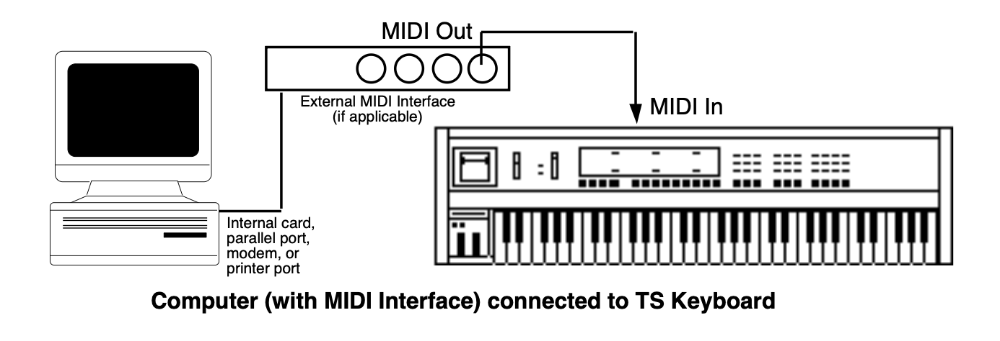

Performance / Composition Synthesizer · Version 3.0
Section 12 — General MIDI
What is General MIDI?
General MIDI (GM) is an industry standard for program mapping that defines 128 sounds and their locations. This means that if a device conforms to the GM standard, MIDI will always call up an acoustic piano, MIDI Program Change #62 will always call up a brass section, etc. Although the actual sounds (tone and quality) will vary from product to product, each specific MIDI Program number will always call up the same type of sound.
Sound Map
The General MIDI Sound Map (found later in this section) lists the 128 General MIDI sounds in the TS‑10 ROM and their assigned General MIDI Program Change numbers.
Percussion
General MIDI also includes a Percussion Key Map, defining specific drum voices for each key. To avoid confusion, General MIDI always assigns percussion to MIDI channel 10. The General MIDI Percussion Key Map can be found after the General MIDI Sound Map.
GS/MT-32 Compatibility
GS is an extended MIDI sound specification originated by Roland® Corp. Although we provide the GS Drum Maps (listed later) and MT-32 Program Change Map for Roland Sound Canvas™ compatibility, the TS‑10 is not GS compatible and does not contain the GS Alternate Sound Banks.
Other General MIDI Requirements
A General MIDI sound module must respond to all 16 MIDI channels, with dynamic voice allocation, and a minimum of 24 voices. It also must respond to velocity, pitch bend, mod wheel, volume and pan, expression, sustain, and the All Notes Off and Reset All Controllers messages.
With these controllers supported, a composition that relies on note articulations and mix settings can be played back and still sound correct when played by any GM sound module. The TS‑10 supports all of the above MIDI messages, and fully conforms to the General MIDI Specification.
Why use General MIDI?
While the TS‑10 instruments are a superb sound source, with greater fidelity and more programmability than most GM modules, there are interesting applications for General MIDI that can enhance your music making.
- There is an interesting genre of music software (for your computer) that creates backing patterns for you to play along with, for pleasure and study.
- Many pre-recorded pieces of music can be purchased for home listening, solo performance backing tracks (e.g., instant karaoke), and other applications. Note that this application requires a computer/hardware sequencer/sequencer player and some type of computer software (such as those listed above). Look through current issues of music/computer software magazines for listings (these products must conform to the Standard MIDI File [SMF] format* in order to use them properly).
- There is an ever-increasing amount of educational software that uses General MIDI for such applications as ear training, music lessons, etc.
- Some computer games offer General MIDI as an optional sound source. The TS‑10 will provide high quality sound variations for this enjoyable leisure activity, enhancing the excitement and thrill of your computer games.
General MIDI Sound Map
The following map shows the General MIDI sound name and program change number of each sound as they appear in the TS‑10. This map also shows how General MIDI divides the instruments into 16 categories of similar sounds:| PROG # | INSTRUMENT | PROG # | INSTRUMENT | PROG # | INSTRUMENT | PROG # | INSTRUMENT |
|---|---|---|---|---|---|---|---|
| 1-8 | PIANO | 33-40 | BASS | 65-72 | REED | 97-104 | SYNTH EFFECTS |
| 1 | GRAND-PIANO | 33 | ACOUSTIC-BS | 65 | SOPRANO-SAX | 97 | EFFECTS |
| 2 | BRITE-PIANO | 34 | FINGERED-BS | 66 | ALTO-SAX | 98 | ICE-RAIN |
| 3 | ELEC-GRAND | 35 | PICKED-BASS | 67 | TENOR-SAX | 99 | SOUNDTRACK |
| 4 | HONKY-TONK | 36 | FRETLESS-BS | 68 | BARI-SAX | 100 | CRYSTAL |
| 5 | ELEC-PIANO1 | 37 | SLAP-BASS-1 | 69 | OBOE | 101 | ATMOSPHERE |
| 6 | ELEC-PIANO2 | 38 | SLAP-BASS-2 | 70 | ENGLISH-HRN | 102 | BRIGHTNESS |
| 7 | HARPSICHORD | 39 | SYNTH-BASS1 | 71 | BASSOON | 103 | GOBLINS |
| 8 | CLAVINET | 40 | SYNTH-BASS2 | 72 | CLARINET | 104 | ECHO-DROPS STAR-THEME |
| 9-16 | CHROMATIC PERCUSSION |
41-48 | STRINGS | 73-80 | PIPE | 105-112 | ETHNIC |
| 9 | CELESTA | 41 | VIOLIN | 73 | PICCOLO | 105 | SITAR |
| 10 | GLOCKNSPIEL | 42 | VIOLA | 74 | FLUTE | 106 | BANJO |
| 11 | MUSIC-BOX | 43 | CELLO | 75 | RECORDER | 107 | SHAMISEN |
| 12 | VIBRAPHONE | 44 | CONTRABASS | 76 | PANFLUTE | 108 | KOTO |
| 13 | MARIMBA | 45 | TREMOLO-STR | 77 | BOTTLE-BLOW | 109 | KALIMBA |
| 14 | XYLOPHONE | 46 | PIZZI-STRGS | 78 | SHAKUHACHI | 110 | BAGPIPES |
| 15 | TUBULR-BELLS | 47 | HARP | 79 | WHISTLE | 111 | FIDDLE |
| 16 | DULCIMER | 48 | TYMPANI | 80 | OCARINA | 112 | SHANNAI |
| 17-24 | ORGAN | 49-56 | ENSEMBLE | 81-88 | SYNTH LEAD | 113-120 | PERCUSSIVE |
| 17 | DRWBAR-ORGN | 49 | STRG-ENSMBL | 81 | SQUARE-WAVE | 113 | TINKLE-BELL |
| 18 | PERC-ORGAN | 50 | SLOW-STRNGS | 82 | SAW-WAVE | 114 | AGOGO |
| 19 | ROCK-ORGAN | 51 | SYNTH-STR-1 | 83 | CALLIOPE | 115 | STEEL-DRUMS |
| 20 | CHRCH-ORGAN | 52 | SYNTH-STR-2 | 84 | CHIFF-LEAD | 116 | WOODBLOCK |
| 21 | REED-ORGAN | 53 | CHOIR-AAHS | 85 | CHARANG | 117 | TAIKO-DRUM |
| 22 | ACCORDION | 54 | VOICE-OOHS | 86 | SOLO-VOICE | 118 | MELODIC-TOM |
| 23 | HARMONICA | 55 | SYNTH-VOICE | 87 | SAW-FIFTHS | 119 | SYNTH-DRUM |
| 24 | BANDONEON | 56 | ORCH-HIT | 88 | BASS+LEAD | 120 | REVERSE-CYM |
| 25-32 | GUITAR | 57-64 | BRASS | 89-96 | SYNTH PAD | 121-128 | SOUND EFFECTS |
| 25 | NYL-STR-GTR | 57 | TRUMPET | 89 | NEW-AGE-PAD | 121 | GT-FRETNOIS |
| 26 | STL-STR-GTR | 58 | TROMBONE | 90 | WARM-PAD | 122 | BREATHNOISE |
| 27 | JAZZ-GUITAR | 59 | TUBA | 91 | POLYSYNTH | 123 | SEASHORE |
| 28 | CLEAN-GUITR | 60 | MUTED-TRMPT | 92 | SPACE-VOICE | 124 | BIRD-TWEET |
| 29 | MUTED-GUITR | 61 | FRENCH-HORN | 93 | BOWED-GLASS | 125 | TELEPHONE |
| 30 | OVRDRIV-GTR | 62 | BRASS-SECTN | 94 | METALIC-PAD | 126 | HELICOPTER |
| 31 | DISTORT-GTR | 63 | SYN-BRASS-1 | 95 | HALO-PAD | 127 | APPLAUSE |
| 32 | GTR-HRMONIC | 64 | SYN-BRASS-2 | 96 | SWEEP-PAD | 128 | GUN-SHOT |
Note that the names listed above are as they appear in the TS‑10, and not as they appear in the General MIDI Spec. The only differences are in spelling.
GM and GS Percussion Key Maps (Channel 10)
| MIDI Note # | Key Name | 1 - STANDARD KIT 33-JAZZ-KIT |
9 - ROOM KIT | 17 - POWER-KIT | 25 - ELECTRONIC KIT |
|---|---|---|---|---|---|
| 35 | B1 | Kick Drum 2 | Kick Drum 2 | Kick Drum | Kick Drum |
| 36 | C2 | Kick Drum 1 | Kick Drum 1 | Mondo Kick | Elec Bass Drum |
| ___ 37 | C2+ | Side Stick | Side Stick | Side Stick | Side Stick |
| 38 | D2 | Acoustic Snare | Acoustic Snare | Gated Snare | Electric Snare |
| ___ 39 | D2+ | Hand Clap | Hand Clap | Hand Clap | Hand Clap |
| 40 | E2 | Electric Snare | Electric Snare | Electric Snare | Gated Snare |
| 41 | F2 | Low Floor Tom | Low Room Tom | Low Room Tom | Elec Low Tom |
| ___ 42 | F2+ | Closed Hi-Hat | Closed Hi-Hat | Closed Hi-Hat | Closed Hi-Hat |
| 43 | G2 | High Floor Tom | Low Room Tom 2 | Low Room Tom 2 | Elec Low Tom |
| ___ 44 | G2+ | Pedal Hi-Hat | Pedal Hi-Hat | Pedal Hi-Hat | Pedal Hi-Hat |
| 45 | A2 | Low Tom | Mid Room Tom | Mid Room Tom | Elec Mid Tom |
| ___ 46 | A2+ | Open Hi-Hat | Open Hi-Hat | Open Hi-Hat | Open Hi-Hat |
| 47 | B2 | Low-Mid Tom | Mid Room Tom | Mid Room Tom | Elec Mid Tom |
| 48 | C3 | High-Mid Tom | High Room Tom | High Room Tom | Elec High Tom |
| ___ 49 | C3+ | Crash Cymbal 1 | Crash Cymbal 1 | Crash Cymbal 1 | Crash Cymbal 1 |
| 50 | D3 | High Tom | High Room Tom | High Room Tom | Elec High Tom |
| ___ 51 | D3+ | Ride Cymbal 1 | Ride Cymbal 1 | Ride Cymbal 1 | Ride Cymbal 1 |
| 52 | E3 | Chinese Cymbal | Chinese Cymbal | Chinese Cymbal | Reverse Cymbal |
| 53 | F3 | Ride Bell | Ride Bell | Ride Bell | Ride Bell |
| ___ 54 | F3+ | Tambourine | Tambourine | Tambourine | Tambourine |
| 55 | G3 | Splash Cymbal | Splash Cymbal | Splash Cymbal | Splash Cymbal |
| ___ 56 | G3+ | Cowbell | Cowbell | Cowbell | Cowbell |
| 57 | A3 | Crash Cymbal 2 | Crash Cymbal 2 | Crash Cymbal 2 | Crash Cymbal 2 |
| ___ 58 | A3+ | Vibraslap | Vibraslap | Vibraslap | Vibraslap |
| 59 | B3 | Ride Cymbal 2 | Ride Cymbal 2 | Ride Cymbal 2 | Ride Cymbal 2 |
| 60 | C4 | High Bongo | High Bongo | High Bongo | High Bongo |
| ___ 61 | C4+ | Low Bongo | Low Bongo | Low Bongo | Low Bongo |
| 62 | D4 | Mute High Conga | Mute High Conga | Mute High Conga | Mute High Conga |
| ___ 63 | D4+ | Open High Conga | Open High Conga | Open High Conga | Open High Conga |
| 64 | E4 | Low Conga | Low Conga | Low Conga | Low Conga |
| 65 | F4 | High Timbale | High Timbale | High Timbale | High Timbale |
| ___ 66 | F4+ | Low Timbale | Low Timbale | Low Timbale | Low Timbale |
| 67 | G4 | High Agogo | High Agogo | High Agogo | High Agogo |
| ___ 68 | G4+ | Low Agogo | Low Agogo | Low Agogo | Low Agogo |
| 69 | A4 | Cabasa | Cabasa | Cabasa | Cabasa |
| ___ 70 | A4+ | Maracas | Maracas | Maracas | Maracas |
| 71 | B4 | Short Whistle | Short Whistle | Short Whistle | Short Whistle |
| 72 | C5 | Long Whistle | Long Whistle | Long Whistle | Long Whistle |
| ___ 73 | C5+ | Short Guiro | Short Guiro | Short Guiro | Short Guiro |
| 74 | D5 | Long Guiro | Long Guiro | Long Guiro | Long Guiro |
| ___ 75 | D5+ | Claves | Claves | Claves | Claves |
| 76 | E5 | High Wood Block | High Wood Block | High Wood Block | High Wood Block |
| 77 | F5 | Low Wood Block | Low Wood Block | Low Wood Block | Low Wood Block |
| ___ 78 | F5+ | Mute Cuica | Mute Cuica | Mute Cuica | Mute Cuica |
| 79 | G5 | Open Cuica | Open Cuica | Open Cuica | Open Cuica |
| ___ 80 | G5+ | Mute Triangle | Mute Triangle | Mute Triangle | Mute Triangle |
| 81 | A5 | Open Triangle | Open Triangle | Open Triangle | Open Triangle |
| ___ 82 | A5+ | Shaker | Shaker | Shaker | Shaker |
| 83 | B5 | Jingle Bell | Jingle Bell | Jingle Bell | Jingle Bell |
| 84 | C6 | Belltree | Belltree | Belltree | Belltree |
| ___ 85 | C6+ | Castanets | Castanets | Castanets | Castanets |
| 86 | D6 | Mute Surdo | Mute Surdo | Mute Surdo | Mute Surdo |
| ___ 87 | D6+ | Open Surdo | Open Surdo | Open Surdo | Open Surdo |
| 88 | E6 |
GM and GS Percussion Key Maps (Channel 10)
| MIDI Note # | Key Name | 26 - TR-808-KIT | 41 - BRUSH-KIT | 49 - ORCH-PERCSN | 128 - MT-32-KIT |
|---|---|---|---|---|---|
| 35 | B1 | Kick Drum 2 | Kick Drum 2 | Concert Bass Drum | Acoustic Bass Drum |
| 36 | C2 | 808 Bass Drum | Kick Drum 1 | Concert Bass Drum | Bass Drum 1 |
| ___ 37 | C2+ | 808 Rim Shot | Side Stick | Side Stick | Rim Shot |
| 38 | D2 | 808 Snare Drum | Brush Tap | Concert Snare Drum | Acoustic Snare |
| ___ 39 | D2+ | Hand Clap | Brush Slap | Castanets | Hand Clap |
| 40 | E2 | Electric Snare | Brush Swirl | Concert Snare Drum | Electric Snare |
| 41 | F2 | 808 Low Tom | Low Floor Tom | Tympani F | Acoustic Low Tom |
| ___ 42 | F2+ | 808 Closed Hi-Hat | Closed Hi-Hat | Tympani F# | Closed Hi-Hat |
| 43 | G2 | 808 Low Tom | High Floor Tom | Tympani G | Acoustic Low Tom |
| ___ 44 | G2+ | 808 Closed Hi-Hat | Pedal Hi-Hat | Tympani G# | Open Hi-Hat |
| 45 | A2 | 808 Mid Tom | Low Tom | Tympani A | Acoustic Mid Tom |
| ___ 46 | A2+ | 80 Open Hi-Hat | Open Hi-Hat | Tympani A# | Open Hi-Hat |
| 47 | B2 | 808 Mid Tom | Mid Tom | Tympani B | Acoustic Mid Tom |
| 48 | C3 | 808 High Tom | High Tom | Tympani C | Acoustic High Tom |
| ___ 49 | C3+ | 808 Cymbal | Crash Cymbal 1 | Tympani C# | Crash Cymbal |
| 50 | D3 | 808 High Tom | High Tom | Tympani D | Acoustic High Tom |
| ___ 51 | D3+ | Ride Cymbal 1 | Ride Cymbal 1 | Tympani D# | Ride Cymbal 1 |
| 52 | E3 | Chinese Cymbal | Chinese Cymbal | Tympani E | |
| 53 | F3 | Ride Bell | Ride Bell | Tympani F | |
| ___ 54 | F3+ | Tambourine | Tambourine | Tambourine | Tambourine |
| 55 | G3 | Splash Cymbal | Splash Cymbal | Splash Cymbal | |
| ___ 56 | G3+ | 808 Cowbell | Cowbell | Cowbell | Cowbell |
| 57 | A3 | Crash Cymbal 2 | Crash Cymbal 2 | Concert Cymbal 2 | |
| ___ 58 | A3+ | Vibraslap | Vibraslap | Vibraslap | |
| 59 | B3 | Ride Cymbal 2 | Ride Cymbal 2 | Concert Cymbal 1 | |
| 60 | C4 | High Bongo | High Bongo | High Bongo | High Bongo |
| ___ 61 | C4+ | Low Bongo | Low Bongo | Low Bongo | Low Bongo |
| 62 | D4 | 808 High Conga | Mute High Conga | Mute High Conga | Mute High Conga |
| ___ 63 | D4+ | 808 Mid Conga | Open High Conga | Open High Conga | High Conga |
| 64 | E4 | 808 Low Conga | Low Conga | Low Conga | Low Conga |
| 65 | F4 | High Timbale | High Timbale | High Timbale | High Timbale |
| ___ 66 | F4+ | Low Timbale | Low Timbale | Low Timbale | Low Timbale |
| 67 | G4 | High Agogo | High Agogo | High Agogo | High Agogo |
| ___ 68 | G4+ | Low Agogo | Low Agogo | Low Agogo | Low Agogo |
| 69 | A4 | Cabasa | Cabasa | Cabasa | Cabasa |
| ___ 70 | A4+ | 808 Maracas | Maracas | Maracas | Maracas |
| 71 | B4 | Short Whistle | Short Whistle | Short Whistle | Short Whistle |
| 72 | C5 | Long Whistle | Long Whistle | Long Whistle | Long Whistle |
| ___ 73 | C5+ | Short Guiro | Short Guiro | Short Guiro | Quijada |
| 74 | D5 | Long Guiro | Long Guiro | Long Guiro | |
| ___ 75 | D5+ | 808 Claves | Claves | Claves | Claves |
| 76 | E5 | High Wood Block | High Wood Block | High Wood Block | |
| 77 | F5 | Low Wood Block | Low Wood Block | Low Wood Block | |
| ___ 78 | F5+ | Mute Cuica | Mute Cuica | Mute Cuica | Punch |
| 79 | G5 | Open Cuica | Open Cuica | Open Cuica | Heartbeat |
| ___ 80 | G5+ | Mute Triangle | Mute Triangle | Mute Triangle | Footsteps 1 |
| 81 | A5 | Open Triangle | Open Triangle | Open Triangle | Footsteps 2 |
| ___ 82 | A5+ | Shaker | Shaker | Shaker | Applause |
| 83 | B5 | Jingle Bell | Jingle Bell | Jingle Bell | Creaking |
| 84 | C6 | Belltree | Belltree | Belltree | Door |
| ___ 85 | C6+ | Castanets | Castanets | Castanets | Scratch |
| 86 | D6 | Mute Surdo | Mute Surdo | Mute Surdo | Wind Chime |
| ___ 87 | D6+ | Open Surdo | Open Surdo | Open Surdo | |
| 88 | E6 | Applause |
- There are four additional sounds assigned to keys in the MT-32-KIT: 90 (F6+) Crash 92 (G6+) Train 93 (A6) Jet 94 (A6+) Helicopter
Using General MIDI in the Real World

Using TS‑10 General MIDI Sounds with an External GM Sequencer
Connecting the TS‑10 keyboard to a computer (or other General MIDI sequencer)
- Power down all electronic devices before making any connections.
- Using a MIDI Cable, connect the MIDI In jack of the TS‑10 to the MIDI Out jack of the computer/hardware sequencer/sequence player.
- Make sure the proper amplification is connected to the TS‑10, and power on the computer, the TS‑10 keyboard, and the amplification system (in that order).
To Enable General MIDI on the TS‑10
- Press the MIDI Control button. The display shows:
- On the first MIDI Control sub-page, press the upper middle soft button on the display to select the GMIDI parameter (it should be underlined).
- Press the Up Arrow button to enter General MIDI Mode.
If the sequencer is running, the SEQUENCER MUST BE STOPPED message will be displayed. If the sequencer is stopped, the SAVE CHANGES? prompt will be displayed (if necessary). Otherwise, the following prompt will be displayed:
ENTER GENERAL MIDI MODE ? *YES* *NO* 4. Pressing the soft button beneath *NO* will leave the TS‑10 system unchanged, returning you to the first MIDI Control sub-page.
5. Pressing the soft button above *YES* will enable General MIDI Mode. All LEDs will be off and all buttons (except the Arrow buttons and the soft buttons) will be disabled. The TS‑10 will display the General MIDI Mode page as follows:
Press here for GM-PANIC RESETMIDI reception ON/OFFPress here to exit GM ModeGeneral MIDI Mode RECV=ON *EXIT* GM-CHAN=01 GM-PROG=001 GM-PROGNAME General MIDI Track/Channel NumberGeneral MIDI Program NumberGeneral MIDI Sound NameThe TS‑10 behaves as though an enlarged 16-track sequence has been selected, and as though the current MIDI Mode is MULTI. Incoming MIDI will be received on all 16 MIDI channels, to 16 discrete inbound Track/Channels. The default effect algorithm (46 CHORUS + REVERB 2) will be installed, and all Tracks/Channels will be routed through the effect.
When you now run the external computer or hardware sequencer, you will hear the proper sounds played from the TS‑10 as program changes and note/controller data is transmitted to the TS‑10 via the MIDI In jack.
MIDI Out in General MIDI Mode
The TS‑10 keyboard will always play the sound assigned to the currently displayed Track/Channel number. Local playing on the TS‑10 keyboard and controllers will be transmitted via the MIDI Out jack on the displayed MIDI Channel number. This allows you to connect the TS‑10 MIDI Out jack to a MIDI sequencer, hardware sequencer, or other MIDI device.
This feature adds MIDI Controller capability to the TS‑10 while in General MIDI Mode.
TS‑10 General MIDI Parameters
RECV (MIDI Reception)Range: ON or OFF
This parameter is set to receive MIDI data by default (RECV=ON). By changing the RECV value for each MIDI channel, you can define how many Track/Channels you want to receive data via MIDI.
Setting RECV=OFF will disable reception of MIDI notes, controllers and program changes on the displayed MIDI channel. Sounds can still be played from the keyboard, and live playing will still transmit via MIDI on the displayed MIDI channel.
When RECV=OFF, the Track/Channel volume will be set to full on (127), so that your live playing can use the full dynamic range. Resetting RECV to ON will reset the Track/Channel volume back to the General MIDI default value of 100.
No matter what the setting of this parameter, a CVP-1 Pedal connected to the Pedal•CV Jack will always control the volume of the selected Track/Channel.
GM-CHANRange: 01 to 16
This parameter is used to select and view the sounds assigned to each MIDI Channel. When this parameter is selected, the Data Entry Controls will scroll through all 16 Track/Channels.
GM-CHAN=10 is permanently assigned to play Drum Maps only. When Track/Channel 10 is selected, the GM-PROG parameter will scroll through the nine available GM/GS Drum Maps.
Playing on the TS‑10 keyboard will always be transmitted on the displayed MIDI channel. If the GM-CHAN value is changed while a note is held down, local voices will be silenced on the previously selected Track/Channel.
GM-PROGRange: 001 to 128
The GM-PROG (General MIDI Program number) parameter determines which sound will be assigned to each MIDI Channel. When this parameter is selected, the Data Entry Controls will change which of the 128 General MIDI ROM Sounds is assigned to the currently displayed Track/Channel. The corresponding Program Change message will be transmitted via MIDI whenever this parameter is edited.
Program Changes received on MIDI channels 1-9 and 11-16 will assign programs to the 16 Track/Channels from the 128 General MIDI sounds in ROM. MIDI Channel 10 can only access the nine GM/GS Drum Maps, and will receive the corresponding GS Drum Map Program change value (1=STANDRD-KIT, 9=ROOM-KIT, 17=POWER-KIT, 25=ELCTRNC-KIT, 26=TR-808-KIT, 33=JAZZ-KIT, 41=BRUSH-KIT, 49=ORCH-PERCSN, 128=MT-32-KIT).
The TS‑10 keyboard will always play the sound assigned to the displayed Track/Channel number.
Manually Assigning GM Sounds to Each MIDI Channel
- Press the soft button beneath the GM-PROG parameter.
- Use the Data Entry Controls to scroll through the different GM Sounds.
The General MIDI Sound names change when you use the Data Entry Controls. These sound names and their associated GM Program numbers are listed on the General MIDI Sound Map found earlier in this section.
General MIDI “Panic” Button
Some remote MIDI Devices may leave notes and controller values “dangling,” causing Track/Channels to function improperly. The TS‑10 has a solution to this problem — the MIDI “Panic” button. Pressing the upper left soft button above GENERAL MIDI MODE will invoke the GM-PANIC RESET function:
“GM-PANIC RESET” will be momentarily displayed. All TS‑10 and MIDI voices on all 16 Track/Channels will be silenced. The following MIDI messages will be transmitted on all 16 MIDI Channels: , , for all keys down, , and will be normalized to the General MIDI default values. Program Changes will be transmitted corresponding to the sounds assigned to each of the 16 Track/Channels.GM-PANIC RESET System and MIDI Control Settings in GM Mode The following System and MIDI Control page parameter settings are installed in General MIDI Mode (see Sections 2 and 3 for information about these parameters). All other parameters are reset to values appropriate for General MIDI reception:
- System page TUNE and PITCH-TABLE settings are retained.
- System page TOUCH and VEL-MAX settings are retained.
- System page PEDAL is set to VOL.
- System page FOOT-SW1-R and SW2-R are set to SUSTAIN.
- System page FOOT-SW1-L and SW2-L are set to SOSTENUTO if they were previously set to any value other than *UNUSED*. If they were set to *UNUSED*, they will remain *UNUSED*.
- MIDI Control page SYS-EX setting is set to ON.
Exiting General MIDI Mode will restore your original settings.
Disabling General MIDI
To Disable General MIDI
- Press the soft button above *EXIT* to exit General MIDI Mode.
The TS‑10 will momentarily show:
GM-TRACKS RESET The TS‑10 will then return to its previous state. The General MIDI Track/Channel sound assignments will be preserved in static RAM, even after power-off.
Enabling/Disabling General MIDI with System Exclusive Messages
General MIDI can also be enabled/disabled using Universal System Exclusive (SysEx) messages:
Turning General MIDI On using SysEx Messages
F07E<Device ID>0901F7F0 7E Universal non-real-time SysEx header <Device ID> ID of target device (suggest using 7F: Broadcast) 09 sub-ID #1=General MIDI message 01 sub-ID #2=General MIDI On F7 EOX (end of SysEx) Turning General MIDI Off using SysEx Messages
F07E<Device ID>0902F7F0 7E Universal non-real-time SysEx header <Device ID> ID of target device (suggest using 7F: Broadcast) 09 sub-ID #1=General MIDI message 02 sub-ID #2=General MIDI Off F7 EOX (end of SysEx) - The MIDI Control SYS-EX parameter must be set to SYS-EX=ON in order to receive Universal SysEx messages.
- A Universal SysEx General MIDI On message acts the same as answering *YES* to the ENTER GENERAL MIDI MODE? prompt, and displays the General MIDI Mode page. The SysEx message will be ignored if the sequencer is running, or if the system is already in General MIDI Mode. Sequencer changes will be saved automatically, unless SAVE-CHANGES=NO (on the third Sequencer Control sub-page).
- If the TS‑10 is already in General MIDI Mode, a Universal SysEx General MIDI Off message acts the same as pressing *EXIT* on the General MIDI Mode screen. This exits General MIDI Mode and returns the TS‑10 to its previous state.
- When in General MIDI Mode, the Universal SysEx message is the only SysEx message that will be received; all other SysEx messages are ignored.
Sound Canvas MT-32 Mode Program Change Map
The Roland® MT-32 was an early, pre-General MIDI multi-timbral sound module. It used a different MIDI Program Change Map than General MIDI. The Roland Sound Canvas™ provides an MT-32 Emulation mode, and some Standard MIDI Files are set up to use this. An MT-32 Program Change Map has been included in the TS‑10 to provide Sound Canvas MT-32 emulation capability.
Roland products use the Bank Select MSB (MIDI Controller 0) to change sound banks; in the Sound Canvas, sound bank 127 is designated as the MT-32 Emulation mode bank. After the TS‑10 has received a Bank Select value of MSB 127, subsequent MIDI Program Changes on that MIDI channel will select the GM Sounds remapped to the Roland MT-32 Program Change Map, as below:
PROG # INSTRUMENT PROG # INSTRUMENT PROG # INSTRUMENT PROG # INSTRUMENT 1 GRAND-PIANO 33 NEW-AGE-PAD 65 ACOUSTIC-BS 97 BRASS-SECTN 2 BRITE-PIANO 34 SWEEP-PAD 66 ACOUSTIC-BS 98 VIBRAPHONE 3 ELEC-GRAND 35 CHOIR-AAHS 67 FINGERED-BS 99 VIBRAPHONE 4 ELEC-PIANO2 36 BOWED-GLASS 68 SYNTH-BASS2 100 DULCIMER 5 ELEC-GRAND 37 SOUNDTRACK 69 SLAP-BASS-2 101 TINKLE-BELL 6 ELEC-PIANO1 38 ATMOSPHERE 70 SLAP-BASS-1 102 GLOCKNSPIEL 7 ELEC-PIANO1 39 MUSIC-BOX 71 FRETLESS-BS 103 TUBULR-BELLS 8 HONKY-TONK 40 SOLO-VOICE 72 FRETLESS-BS 104 XYLOPHONE 9 DRWBAR-ORGN 41 POLYSYNTH 73 FLUTE 105 MARIMBA 10 ROCK-ORGAN 42 ICE-RAIN 74 FLUTE 106 KOTO 11 PERC-ORGAN 43 POLYSYNTH 75 PICCOLO 107 BANDONEON 12 DRWBAR-ORGN 44 ECHO-DROPS 76 PICCOLO 108 SHAKUHACHI 13 CHRCH-ORGAN 45 BASS+LEAD 77 RECORDER 109 WHISTLE 14 CHRCH-ORGAN 46 REED-ORGAN 78 PANFLUTE 110 WHISTLE 15 CHRCH-ORGAN 47 GLOCKNSPIEL 79 ALTO-SAX 111 BOTTLE-BLOW 16 ACCORDION 48 SQUARE-WAVE 80 SOPRANO-SAX 112 BOTTLE-BLOW 17 HARPSICHORD 49 STRG-ENSMBL 81 TENOR-SAX 113 TYMPANI 18 HARPSICHORD 50 STRG-ENSMBL 82 BAR-SAX 114 MELODIC-TOM 19 SQUARE-WAVE 51 SYNTH-STR-1 83 CLARINET 115 SYNTH-DRUM 20 CLAVINET 52 PIZZI-STRGS 84 CLARINET 116 SYNTH-DRUM 21 CLAVINET 53 VIOLIN 85 OBOE 117 SYNTH-DRUM 22 CLAVINET 54 VIOLIN 86 ENGLISH-HRN 118 TAIKO-DRUM 23 CELESTA 55 CELLO 87 BASSOON 119 WOODBLOCK 24 CELESTA 56 CELLO 88 HARMONICA 120 REVERSE-CYM 25 SYN-BRASS-1 57 CONTRABASS 89 TRUMPET 121 WOODBLOCK 26 SYN-BRASS-1 58 HARP 90 TRUMPET 122 TINKLE-BELL 27 SYN-BRASS-2 59 HARP 91 TROMBONE 123 ORCH-HIT 28 SYN-BRASS-2 60 NYL-STR-GTR 92 TROMBONE 124 TELEPHONE 29 SYNTH-BASS2 61 STL-STR-GTR 93 FRENCH-HORN 125 BIRD-TWEET 30 HARPSICHORD 62 CLEAN-GUITR 94 FRENCH-HORN 126 BREATHNOISE 31 SAW-WAVE 63 CLEAN-GUITR 95 TUBA 127 CRYSTAL 32 SYNTH-BASS2 64 SITAR 96 BRASS-SECTN 128 BREATHNOISE After receiving a Bank Select value of MSB 127 on MIDI Channel 10, any subsequent MIDI program changes on MIDI channel 10 will always select the MT-32 Drum Map.
Transmitting a Bank Select value of 0-126 MSB will return the MIDI channel to normal MIDI program change reception, selecting sounds from the General MIDI Sound Map as described on the previous page.
MIDI Controller Implementation in General MIDI Mode
When in General MIDI Mode, many of the TS‑10 controllers function differently than noted in the , and are described in the chart on the following page.
General MIDI Mode Controller Implementation Chart
Function… Transmitted Recognized Notes Velocity — Note ON YES YES 1 In the TS‑10, a Note Off velocity of 64 is always sent for all keys.
2 The TS‑10 voice architecture does not support Release Velocity.Velocity — Note OFF YES1 NO2 Aftertouch — Key NO NO Aftertouch — Channel NO NO Pitch Bender YES YES Defaults to a value of 64 (center). Controller 0
(Bank Select MSB)YES YES Always transmitted as 00. An MSB value of 127 received will select the MT-32 Program Change Sound Map. Controller 1
(Mod Wheel)YES YES Defaults to a value of 0. Controller 4
(Foot Pedal)NO NO Controller 6
(Data Entry MSB)NO YES For recognized Registered Parameters only after controllers 100 & 101 are received. Controller 7
(Volume)YES YES Defaults to a value of 100. Setting RECV=OFF will default the Track/Channel volume to 127. Devices connected to the Pedal•CV jack will control volume. Controller 10
(Pan)NO YES Defaults to a value of 64 (center). Controller 11
(Expression)NO YES Defaults to a value of 127. Expression messages received will be responded to as Mix. Controller 12
(Effect Mod Foot Switch)NO NO Controller 32
(Bank Select LSB)YES NO Always transmitted as 00. Controller 38
(Data Entry LSB)NO YES For recognized Registered Parameters only after controllers 100 & 101 are received. Controller 64
(Sustain)YES YES This defaults to a value of 0. The right foot switch will always function as Sustain. Controller 66
(Sostenuto)YES YES This defaults to a value of 0. The left foot switch can function as Sostenuto, if a stereo foot switch is connected. Controller 70
(Sound Variation)YES NO ENSONIQ Patch Selects; values of 00, 20, 40, 7F Controller 71
(Harmonic Content)NO NO ENSONIQ Timbre. Controller 72
(Release Time)NO YES Defaults to a value of 64 (center). Controller 73
(Attack Time)NO YES Defaults to a value of 64 (center). Controller 74
(Brightness)NO YES Defaults to a value of 64 (center). Controller 75
(Rate)NO YES Defaults to a value of 64 (center). Controller 91
(External Effects {Reverb} Depth)NO YES Controls effect bus switching and the FX2 wet/dry mix in the General MIDI effect. Controller 93
(Chorus Depth)NO YES Controls effect bus switching and the FX1 wet/dry mix in the General MIDI effect. Controller 100
(Reg Param Select LSB)NO YES Values of 00, 01, and 02. Controller 101
(Reg Param Select MSB)NO NO Controller 120
(All Sound Off)NO YES Responded to as . Controller 121
(Reset All Controllers)YES YES messages received will normalize only the controllers supported in General MIDI Mode. It is received independently on each of the 16 General MIDI Track/Channels. Controller 123
(All Notes Off)YES YES messages received will be responded to regardless of the setting of the ALL-OFF parameter on the MIDI Control page. It is received independently on each of the 16 General MIDI Track/Channels. Registered Parameters: These Registered Parameters are received independently on each of the 16 General MIDI Track/Channels. 0 Pitch Bend Range NO YES 1 Fine Tuning NO YES 2 Coarse Tuning NO YES Program Change YES YES 0-127
| MIDI | BASE-CHAN=01 | GMIDI=OFF | SEND=TRACK |
| MODE=MULTI | VELS/XPOS=BOTH | XCTRL=002 | |